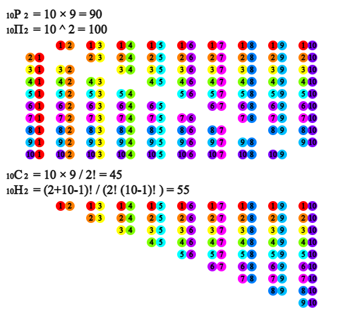
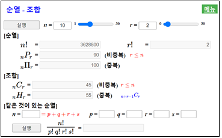
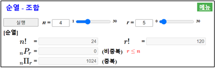
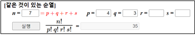
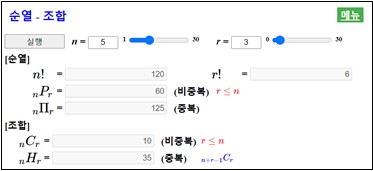
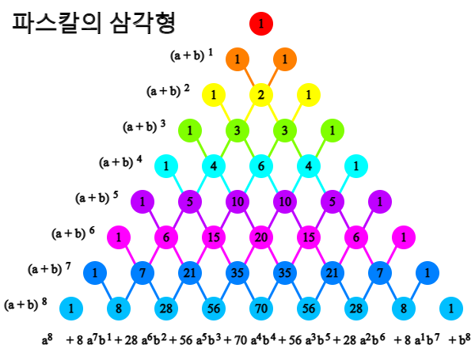

⭐ 생각열기 |
회원이 10명인 한 자전거 동호회에서 앞으로 1년간 모임을 운영을 사람을 뽑고자 한다. |
💎 탐구 |
1) 회원 중에서 회장 1명과 부회장 1명을 뽑는 경우는 얼마나 될까? 2) 단지 대표 2명을 뽑는 경우의 수는 얼마나 될까? |
🎲 🎴 ♥ ♦ ♣ ♠1.1 순열과 조합 |
- 우리 일상생활에서는 적절한 의사 결정을 해야 하는 상황이 많이 발생한다. 합리적인 의사결정을 위해서는 가능한 경우를 파악하여 여러 가지 대안을 분석해야 한다. 관찰되는 자료에는 일정한 유형과 규칙이 있는 경우가 많다. 이때 모든 가능한 경우를 파악하는데 순열과 조합이 많이 이용된다. |
⭐ 생각열기 |
회원이 10명인 한 자전거 동호회에서 앞으로 1년간 모임을 운영을 사람을 뽑고자 한다. |
💎 탐구 |
1) 회원 중에서 회장 1명과 부회장 1명을 뽑는 경우는 얼마나 될까? 2) 단지 대표 2명을 뽑는 경우의 수는 얼마나 될까? |
회원 10명 중에서 회장 1명을 뽑는 경우의 수는 10가지이다. 회장을 뽑은 후 부회장을 뽑는 경우의 수는 회장으로 뽑힌 사람을 제외해야 하므로 9가지이다. 따라서 회장 1명과 부회장 1명을 뽑는 전체 경우의 수는 10 × 9 = 90 이다. 이를 10명 중 2명을 순서를 생각하여 선택하는 순열이라 부르고 \({}_{10} P_{2} \)로 표시한다. <그림 1.1>의 윗부분이 90가지 경우의 수를 보여준다.

단지 대표 2명을 뽑는 것은 위의 경우에서 회장과 부회장으로 뽑힌 두 사람의 직책을 구분하지 않는 경우로 볼 수 있어 전체 경우의 수는 \(\frac{{}_{10} P_{2}}{2}\) = 45 이다. 이를 10명 중 2명을 순서를 생각하지 않고 선택하는 조합으로 부르고 \({}_{10} C_{2}\)로 표시한다. <그림 1.1>의 아래 부분이 45가지 경우의 수를 보여준다.
10명을 모두 나열하는 경우의 수는 다음과 같고 이를 10! (10 팩토리얼로 읽음)로 표시한다.
✨ 순열
일반적으로 \(n\)개의 사물 중 \(r\)개를 선택해 순서를 고려해 나열하는 순열은 다음과 같이 계산된다. .
✨ 조합
일반적으로 \(n\)개의 사물 중 \(r\)개를 순서를 고려치 않고 선택하는 경우의 수를 조합이라 하고 다음과 같이 계산된다.
순열과 조합을 수작업이나 계산기를 이용하여 계산하려면 쉽지 않은데『eStatH』를 이용하면 간편히 계산할 수 있다.
\(n\)이 10보다 작고 \(r\)이 2인 경우에 [실행] 버튼을 누르면 모든 경우의 수에 대한 그림을 보여준다(<그림 1.1>).
|

<그림 1.2> 순열과 조합의 계산
|
⏱ 문제 1.1 |
어느 학급에 30명의 학생이 있다.
1) 이 중에서 3명의 대의원을 선출하는 경우의 수는?
2) 회장 1명, 부회장 1명, 총무 1명을 뽑는 경우의 수는?
|
여러 가지 변형된 순열의 경우의 수에 대해 알아보자
⭐ 생각열기 |
10명의 자전거 회원들이 원형 식탁에 않아 식사를 하려고 한다. |
💎 탐구 |
10명을 일렬로 나열하는 경우의 수는 10! 인데 원형 식탁에 않는 경우도 마찬가지일까? |
10명을 일렬로 배열한 다음의 경우를 생각해 보자
원형 식탁에 않는 경우는 위의 10가지가 모두 같은 경우가 된다. 모든 10! 경우의 수에 위의 경우처럼 10가지씩 같은 경우가 생긴다. 따리서 10명의 회원이 원형 식탁에 둘러않는 경우의 수는
이다. 이와 같이 서로 다른 것을 원형으로 배열하는 순열을 원순열이라 한다.
✨ 원순열
서로 다른 \(n\)개의 사물을 원형으로 배열하는 원순열의 경우의 수는 다음과 같다.
⏱ 문제 1.2 |
한 중국집의 회전 식탁에 탕수육, 잡채, 군만두, 자장면, 볶음밥 등을 놓고자 한다.
1) 요리를 배치하는 경우의 수는?
2) 자장면과 볶음밥을 인접하게 배치하는 경우의 수는?
|
⭐ 생각열기 |
나의 여행 가방은 숫자 0에서 9까지 적혀있는 세 개의 굴림쇠를 이용하여 비밀번호를 설정하도록 되어있다. |
💎 탐구 |
세 개의 숫자로 비밀번호를 설정하는 경우의 수는 얼마일까? |
세 개의 숫자를 이용하여 비밀번호를 정하는 경우의 수는 첫 번째, 두 번째, 세 번째 각 자리의 숫자가 10개씩 있으므로 다음과 같다.
이와 같이 서로 다른 \(n\)개의 사물에서 중복을 허락하여 \(r\)개를 선택하는 순열을 중복순열이라 하고, 기호로 \({}_n \pi_{r}\) 로 표시한다. 중복순열의 수는 \(n\)개의 사물이 첫 번째, 두 번째, ... ,\(r\)번째 자리에 중복해서 나타날 수 있으므로 다음과 같다.
✨ 중복순열
서로 다른 \(n\)개의 사물을 중복을 허용하여 \(r\)번 선택하는 경우의 수는 다음과 같다.
|

<그림 1.3> 중복순열의 계산
|
⏱ 문제 1.3 |
한 카드회사의 고객은 0부터 9까지의 숫자를 이용하여 여섯 자리의 비밀번호를 만들어야 한다. 전체 만들 수 있는 비밀번호의 경우의 수는? |
⭐ 생각열기 |
검은 공 세 개와 빨간 공 두 개를 일렬로 배열하고자 한다. |
💎 탐구 |
다섯 개의 공을 배열하는 전체 경우의 수가 \({}_5 P_5 \) = 5! = 120 일까? |
세 개의 검은 공을 B, B, B 두 개의 빨간 공을 R, R로 표시하자. 각각의 공이 모두 다르다면 120개의 서로 다른 공의 순열이 생긴다. 하지만 검은 공 세 개와 빨간 공 두 개가 서로 같으므로 120개의 순열 중 구별할 수 없는 경우가 생긴다. 예를 들어, 검은 공을 \(B_1 \), \(B_2 \), \(B_3 \), 빨간 공을 \(R_1 \), \(R_2 \)로 표시하여 순열을 생각하면 다음과 같은 12가지의 순열은 모두 동일한 B, B, B, R, R 이라는 순열이다.
| 검은 공을 \(B_1 , B_2 , B_3 \) 빨간 공을 \(R_1 , R_2 \)로 표시한 순열 |
검은 공을 B, B, B 빨간 공을 R, R로 표시한 순열 |
|---|---|
|
\(B_1 , B_2 , B_3 , R_1 , R_2 \) \(B_1 , B_3 , B_2 , R_1 , R_2 \) \(B_2 , B_1 , B_3 , R_1 , R_2 \) \(B_2 , B_3 , B_1 , R_1 , R_2 \) \(B_3 , B_1 , B_2 , R_1 , R_2 \) \(B_3 , B_2 , B_1 , R_1 , R_2 \) \(B_1 , B_2 , B_3 , R_2 , R_1 \) \(B_1 , B_3 , B_2 , R_2 , R_1 \) \(B_2 , B_1 , B_3 , R_2 , R_1 \) \(B_2 , B_3 , B_1 , R_2 , R_1 \) \(B_3 , B_1 , B_2 , R_2 , R_1 \) \(B_3 , B_2 , B_1 , R_2 , R_1 \) |
\(B, B, B, R, R\) |
여기서 12가지 경우란 검은 공 세 개의 순열 3! 과 빨간 공 두 개의 순열 2!을 곱한 것이다. 위와 같이 공 5개의 120가지의 순열에는 12가지씩 같은 것이 생기므로 3개의 검정색 공과 2개의 빨간색 공을 일렬로 배열하는 순열의 수는 다음과 같다.
일반적으로 같은 것이 있는 순열은 다음과 같다.
✨ 같은 것이 있는 순열
\(n\)개의 사물 중 서로 같은 것이 각각 \(p\)개, \(q\)개, ... , \(z\)개 있을 때 이들 \(n\)개를 일렬로 배열하는 순열의 수는 다음과 같다.
|
 <그림 1.4> 같은 것이 있는 순열의 계산
|
⏱ 문제 1.4 |
STATISTICS이라는 단어에 포함된 문자를 모두 사용하여 만들 수 있는 순열의 수를 구하라. |
⏱ 문제 1.5 |
프로 야구 한국 시리즈는 7전 4선승제이다. 한국 시리즈에 오른 A, B 두 팀 중에서 A팀이 7차전에서 승리하여 우승하는 경우의 수를 구하라. 매 게임에 무승부는 없다고 가정하자. |
⭐ 생각열기 |
여행지에 가보니 빨강, 초록, 파랑색 세 가지 예쁜 연필이 있다. 이 연필을 구입하여 친구 4명에게 선물하고자 한다. |
💎 탐구 |
네 개의 연필을 구입하는 경우의 수는 얼마일까? |
세 가지 색의 연필에서 네 개를 고르려면 중복이 허락되어야 하고, 또 연필을 구입하는 것은 순서를 고려하지 않으므로 조합이다. 이와 같이 중복을 허용하여 만든 조합을 중복조합이라고 한다. 서로 다른 \(n\)개의 사물에서 \(r\)개를 선택하는 중복조합의 수를 \({}_n H_{r}\)로 표시한다.
빨강, 초록, 파랑색 연필을 각각 R, G, B라고 하자. 네 개의 연필을 구입하는 \({}_3 H_{4}\) 경우의 수는 15가지로 다음표의 왼쪽과 같이 적을 수 있다. 여기에 R, G, B를 구분하는 사각형 을 삽입하면 오른쪽과 같다.
| 빨강 연필의 개수로 정리한 경우의 수 | 빨강, 초록, 파랑의 구분선 을 삽입한 경우의 수 |
|---|---|
|
네 개 빨강 R R R R 세 개 빨강 R R R G 세 개 빨강 R R R B 두 개 빨강 R R B B 두 개 빨강 R R G B 두 개 빨강 R R G G 한 개 빨강 R G G G 한 개 빨강 R G G B 한 개 빨강 R G B B 한 개 빨강 R B B B 영 개 빨강 G G G G 영 개 빨강 G G G B 영 개 빨강 G G B B 영 개 빨강 G B B B 영 개 빨강 B B B B |
네 개 빨강 R R R R 세 개 빨강 R R R G 세 개 빨강 R R R B 두 개 빨강 R R B B 두 개 빨강 R R G B 두 개 빨강 R R G G 한 개 빨강 R G G G 한 개 빨강 R G G B 한 개 빨강 R G B B 한 개 빨강 R B B B 영 개 빨강 G G G G 영 개 빨강 G G G B 영 개 빨강 G G B B 영 개 빨강 G B B B 영 개 빨강 B B B B |
이와 같이 생각하면 서로 다른 세 가지 색의 연필이 있을 때 네 개를 선택하는 중복조합의 수 는 6개의 사물이 있을 때 이 중 같은 것이 네 개 (●,●,●,●), 두 개(, )있는 순열의 수와 같다. 즉
일반적으로 중복조합의 수 \({}_n H_{r}\)는 \(r\)개의 ●와 경계를 구분하는 (\(n-1\))개의 를 배열하는 같은 것이 있는 순열의 수와 같으므로 다음과 같다.
✨ 중복조합의 수
서로 다른 \(n\)개의 사물을 \(r\)개를 선택하는 중복조합의 수는 다음과 같다.
|

<그림 1.5> 중복조합의 계산
|
⏱ 문제 1.6 |
상자에 들어있는 세 종류의 과자를 중복을 허용하여 다섯 명에게 나누어주는 경우의 수는? |
⭐ 생각열기 |
세 개의 주머니에 은구슬과 금구슬이 각각 하나 들어있다. 은구슬에는 \(a\)라는 문자가 적혀 있고 금구슬에는 \(b\)라는 문자가 적혀 있다. |
💎 탐구 |
1) 각 주머니에서 하나씩 구슬을 뽑아 적힌 문자를 곱해 보려고 한다. 나타나는 전체 경우의 수는 얼마일까?
2) 이 중에서 금구슬을 두 번 뽑은 \(ab^2\)가 되는 경우의 수를 조합으로 표시할 수 있을까?
|
세 개의 주머니에서 하나씩 구슬을 뽑는 전체 경우의 수와 각 경우에 적힌 문자를 곱했을 때 나타나는 항이 다음과 같다.
| 세 주머니에서 하나씩 구슬을 뽑는 전체 경우와 적힌 문자의 곱 |
정리된 문자의 곱 | 같은 항의 수 |
|---|---|---|
| 은 은 은 ⇨ \(a × a × a\) | \(a^3\) | \({}_3 C_0 = 1\) |
|
은 은 금 ⇨ \(a × a × a\) 은 금 은 ⇨ \(a × b × a\) 금 은 은 ⇨ \(b × a × a\) |
\(a^2 b\) | \({}_3 C_1 = 3\) |
|
은 금 금 ⇨ \(a × b × b\) 금 은 금 ⇨ \(b × a × b\) 금 금 은 ⇨ \(b × b × a\) |
\(a b^2\) | \({}_3 C_1 = 3\) |
| 금 금 금 ⇨ \(b × b × b\) | \(b^3\) | \({}_3 C_3 = 1\) |
이 중에서 \(ab^2 \)가 되는 경우의 수는 세 가지({은,금,금}, {금,은,금}, {금,금,은})로서 세 주머니에서 금구슬을 두 번 뽑는 조합의 수인 \({}_3 C_{2}\) = 3 과 같다.
마찬가지로 항 \(a^3 , a^2 b, b^3 \)의 경우의 수는 \({}_3 C_{0} , {}_3 C_{1} , {}_3 C_{3} \)가 된다.
위의 실험은 다항식 \((a+b)^3\)을 전개할 때 나타나는 항과 동일하다 $$ \begin{align} (a+b)^3 ~&=~(a+b)(a+b)(a+b) \\ ~&=~(aa + ab+ba+bb)((a+b) \\ ~&=~aaa+aab+aba+abb+baa+bab+bba+bbb \\ ~&=~a^3 +3a^2 b+3ab^2 +b^3 \end{align} $$ 각 항의 경우의 수를 조합을 이용하여 나타내면 다음과 같다. $$ \begin{align} (a+b)^3 ~=~{}_3 C_{0}a^3 +{}_3 C_{1}a^2 b + {}_3 C_{2}ab^2 + {}_3 C_{3}b^3 \end{align} $$ 일반적으로 \((a+b)^3\)의 전개식은 \(n\)개의 \((a+b)\) 중에서 각각 \(a\) 또는 \(b\)를 하나씩 택하여 곱한 항을 모두 더한 것이다. 여기서 항 \(a^{n-r} b^r\)은 \(n-r\)개에서 각각 \(a\)를 택하고 \(r\)개에서 각각 \(b\)를 택하여 곱한 것이므로 \(a^{n-r} b^r\)의 계수는 \({}_n C_r\)과 같다. 따라서 \((a+b)^n\)의 전개식을 조합의 수를 이용하여 나타내면 다음과 같다. $$ \begin{align} (a+b)^n ~=~{}_n C_{0}a^n +{}_n C_{1}a^{n-1} b + \cdots + {}_n C_{r}a^{n-r}b^r + \cdots + {}_n C_{n}b^n \end{align} $$ 이것을 이항정리라고 하고 각 항의 계수 $$ \begin{align} {}_n C_{0} , {}_n C_{1} , \cdots , {}_n C_{r} , \cdots . {}_n C_{n} \end{align} $$ 을 이항계수라 하고 \({}_n C_{r}a^{n-r}b^r \)를 전개식의 일반항이라고 한다.
✨ 이항정리
\(n\)이 자연수일 때 $$ \begin{align} (a+b)^n ~=~{}_n C_{0}a^n +{}_n C_{1}a^{n-1} b + \cdots + {}_n C_{r}a^{n-r}b^r + \cdots + {}_n C_{n}b^n \end{align} $$
\((a+b)^n\)의 이항계수를 각 \(n\)=1,2,3, ... 에 대해 <그림 1.6>과 같이 삼각형 형태로 배열한 것을 파스칼의 삼각형이라고 한다.
파스칼의 삼각형에서 각 단계의 배열은 대칭이다. 이는 두 항 \(a^{n-r}b^r \)과 \(a^{r}b^{n-r} \)의 계수 \({}_n C_{r}\)과 \({}_n C_{n-r}\)이 같기 때문이다.
또 각 단계에서 이웃하는 두 수의 합은 그 다음 단계에서 두수의 중앙에 있는 수와 같음을 알 수 있는데 이는 \({}_n C_{r} = {}_{n-1} C_{r-1} + {}_{n-1} C_{r}\)이기 때문이다.
|

<그림 1.6> 파스칼의 삼각형
|
풀이왼쪽의 QR을 이용해 『eStatH』 메뉴에서 ‘이항정리 – 파스칼의 삼각형’을 선택하면 <그림 1.6>과 같은 \(n\) = 8인 경우의 파스칼의 삼각형과 전개식이 나타난다. 다른 \(n\)에 대한 파스칼의 삼각형을 보려면 \(n\)값을 입력하고 [실행] 버튼을 누르면 된다. |
⏱ 문제 1.7 |
파스칼의 삼각형을 이용하여 \((a+b)^5 \)을 전개하라. |
*** 답을 선택한 후 [제출] 버튼을 누르세요